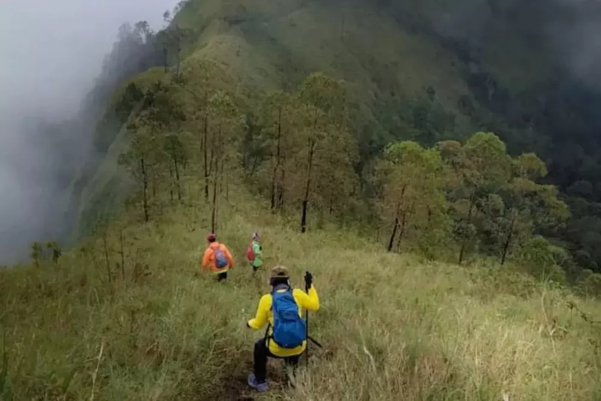
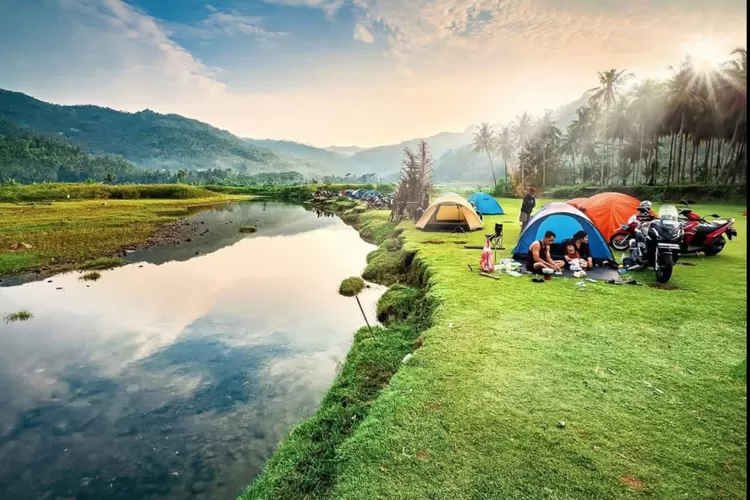

Tourist Places in Trenggalek

🏔️ Gunung Wilis via Botoputih
Gunung Wilis via jalur Botoputih, Trenggalek, adalah destinasi alam menakjubkan. Puncaknya sekitar 2.169 mdpl, jalur sepi, dengan hutan tropis dan pemandangan kota Trenggalek hingga laut selatan Jawa.
Karakter Jalur
- Jalur alternatif yang masih sepi dan alami.
- Vegetasi hutan tropis, semak, dan punggungan gunung.
- Trek tanah dengan kemiringan menengah-curam.
Waktu Tempuh
2 jam dari basecamp ke puncak, tergantung kondisi.
Daya Tarik
- Pemandangan indah Trenggalek dan Tulungagung.
- Suasana privat dan natural.
- Melewati hutan pinus yang asri
Tips
- Bawa perbekalan cukup, karena fasilitas terbatas.
- Perhatikan ketersediaan air.
- Gunakan guide lokal jika pertama kali mendaki.

🌊 Pantai Kebo
Pantai Kebo, Trenggalek, terkenal dengan pasir putih lembut dan ombak selatan yang menenangkan. Cocok untuk menikmati sunset, camping ringan, dan bersantai menikmati alam.
Karakter Pantai
- Pantai alami dengan pasir lembut dan batu karang.
- Ombak cukup besar, lebih cocok untuk panorama.
- Tenang dan jarang dikunjungi wisatawan.
Waktu Tempuh
3 jam dari kota ke lokasi, tergantung kondisi.
Daya Tarik
- Pemandangan laut biru dan bukit hijau di sekitarnya.
- Spot sunset langsung menghadap barat.
- Cocok untuk camping ringan, piknik, dan fotografi.
Tips
- Bawa bekal sendiri karena fasilitas terbatas.
- Datang sore untuk sunset terbaik.
- Hati-hati di bibir pantai karena ombak besar.